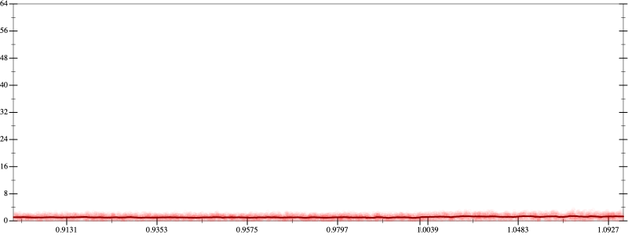
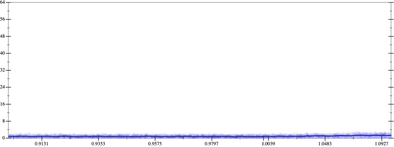
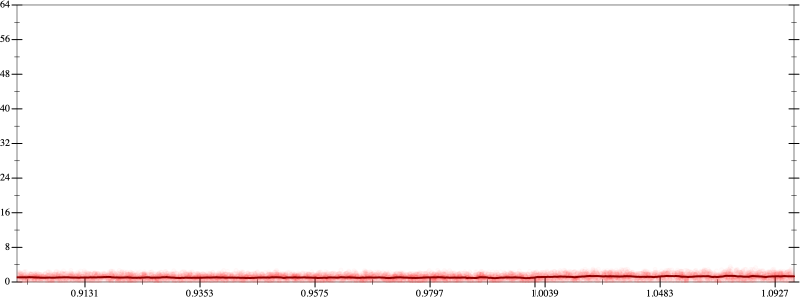
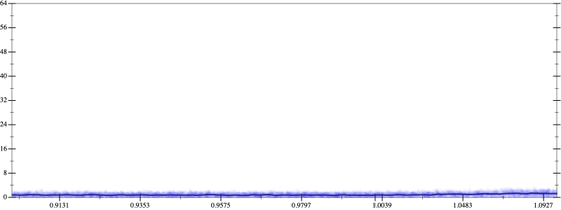

Initial program 1.1
\[\left(\left(-120.0 + 720.0 \cdot \left(x \cdot x\right)\right) + -480.0 \cdot \left(\left(\left(x \cdot x\right) \cdot x\right) \cdot x\right)\right) + 64.0 \cdot \left(\left(\left(\left(\left(x \cdot x\right) \cdot x\right) \cdot x\right) \cdot x\right) \cdot x\right)\]
- Using strategy
rm Applied add-log-exp1.1
\[\leadsto \color{blue}{\log \left(e^{\left(\left(-120.0 + 720.0 \cdot \left(x \cdot x\right)\right) + -480.0 \cdot \left(\left(\left(x \cdot x\right) \cdot x\right) \cdot x\right)\right) + 64.0 \cdot \left(\left(\left(\left(\left(x \cdot x\right) \cdot x\right) \cdot x\right) \cdot x\right) \cdot x\right)}\right)}\]
Applied simplify0.9
\[\leadsto \log \color{blue}{\left(\left(e^{-120.0} \cdot {\left(e^{64.0}\right)}^{\left({\left(x \cdot x\right)}^{3}\right)}\right) \cdot {\left(e^{x \cdot x}\right)}^{\left(x \cdot \left(x \cdot -480.0\right) + 720.0\right)}\right)}\]
- Using strategy
rm Applied exp-prod0.9
\[\leadsto \log \left(\left(e^{-120.0} \cdot {\left(e^{64.0}\right)}^{\left({\left(x \cdot x\right)}^{3}\right)}\right) \cdot {\color{blue}{\left({\left(e^{x}\right)}^{x}\right)}}^{\left(x \cdot \left(x \cdot -480.0\right) + 720.0\right)}\right)\]
Applied pow-pow0.9
\[\leadsto \log \left(\left(e^{-120.0} \cdot {\left(e^{64.0}\right)}^{\left({\left(x \cdot x\right)}^{3}\right)}\right) \cdot \color{blue}{{\left(e^{x}\right)}^{\left(x \cdot \left(x \cdot \left(x \cdot -480.0\right) + 720.0\right)\right)}}\right)\]
- Using strategy
rm Applied pow-unpow0.9
\[\leadsto \log \left(\left(e^{-120.0} \cdot {\left(e^{64.0}\right)}^{\left({\left(x \cdot x\right)}^{3}\right)}\right) \cdot \color{blue}{{\left({\left(e^{x}\right)}^{x}\right)}^{\left(x \cdot \left(x \cdot -480.0\right) + 720.0\right)}}\right)\]
 
